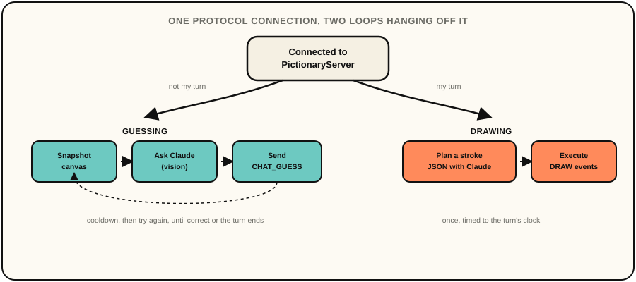

Doodle Room AI Player
An AI player for my Doodle Room Pictionary game. It joins as a real player and plays both sides, guessing sketches from a live canvas snapshot, and taking its own turn by planning and drawing a sketch stroke by stroke.
For design choices, like whether the guess loop should react to every incoming stroke or wait behind a cooldown, or whether to trust the stroke-plan JSON outright versus validating and clamping it after the fact, I had Claude lay out the options and tradeoffs, but I made the call each time. It also caught real bugs during development, an Anthropic SDK argument that had quietly changed, and a coordinate-space mismatch that made the bot's own drawings invisible to a human player.
Doodle Room is one of my favorite projects, and I
wanted an excuse to get hands on with generative AI too. This bot connects to
a running PictionaryServer as an ordinary WebSocket player, no
changes to Doodle Room needed, and plays the full game on both sides of the
board.
As a guesser, it replays the drawer's strokes onto a virtual
canvas, hands a snapshot to Claude's vision every so often, and sends its best
guess as a chat message. It paces itself with cooldowns, backs off once it's
right, and skips guesses other players already tried. As the
drawer, it asks Claude for a simple line-art sketch as a JSON
stroke plan, then executes it as real timed DRAW events, budgeted
to fit the turn's clock.
Both roles are really the same idea flipped. One call turns pixels into a word, the other turns a word into pixels, and both sit inside a small state machine that tracks turns, scoring, and timing straight from the server's messages.
Claude is confident even when it's wrong, and that shows up in both roles. As a guesser it'll sometimes answer with a full sentence, stray punctuation, or a word that's plainly the wrong length for what's been revealed. Rather than prompt that away, the code just doesn't trust the raw text: it's trimmed down to a single clean token, and the actual correctness check happens server-side as an exact string match, so a hallucinated guess just misses, the same as a human's wrong guess.
The bigger risk was the drawer's stroke plan, since a broken response there could stall the whole game, not just cost one guess. The JSON Claude returns is never assumed clean, it can arrive wrapped in markdown fences or with a few malformed points despite the prompt asking for neither. A parser strips fences, keeps only well-formed points, clamps their coordinates into range, and drops the rest, rather than throwing away a whole otherwise-fine plan over one bad entry. If that still comes back empty, a hardcoded fallback shape kicks in so the turn always draws something, guaranteed structured output by construction, not by hoping the model behaves.
Before writing any code, I felt it was important to read through GameRoom.java
and pictionary.html to get the message shapes right, the phase
machine (LOBBY → PICKING_WORD → DRAWING → TURN_END → GAME_OVER),
what a masked word looks like, and how a close guess gets scored. The goal was
for the bot to look like just another browser tab at the protocol level, not a
special-cased client the server has to know about. From there, the guesser and
drawer roles are each a small background loop hanging off that same state
machine.

My first instinct was to guess on every incoming DRAW event, but
that was inefficient and wasteful, and people don't normally re-guess after every pen stroke anyways.
Instead a background loop waits a couple seconds, snapshots the canvas, asks
Claude, and backs off on a cooldown, one that resets early on a
LETTER_REVEAL since that's genuinely new information. It also
tracks other players' wrong guesses from the chat feed so it doesn't repeat
them.
The most confusing bug came from constructing things too early. I created the
bot's asyncio.Event in __init__, which works fine
until you remember Python 3.9 binds that object to whatever event loop is
running the moment it's built, and the bot gets constructed before
asyncio.run() starts one. It surfaced as a confusing crash the
first time I tried to unit test the bot directly instead of running it live.
The fix was making the event lazy, created on first real use inside an
already-running loop.
I didn't want "run two browser tabs and watch" to be the only way to know if this worked. So the test suite spins up a real WebSocket server in process, scripts a sequence of server messages, and drives the bot through a full turn, connecting, watching strokes come in, guessing, and seeing the game end. That caught wiring bugs a unit test on the bot's internal logic alone never would have.